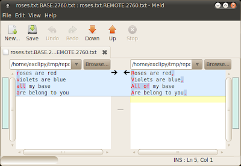
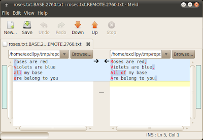
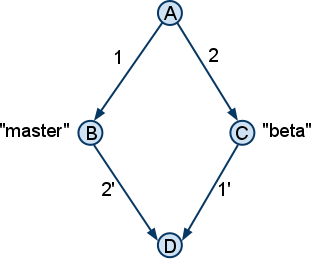
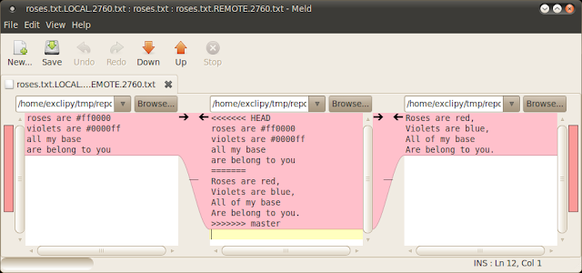
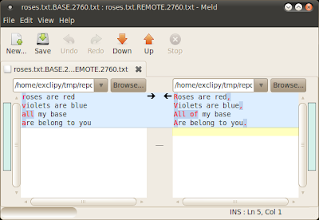
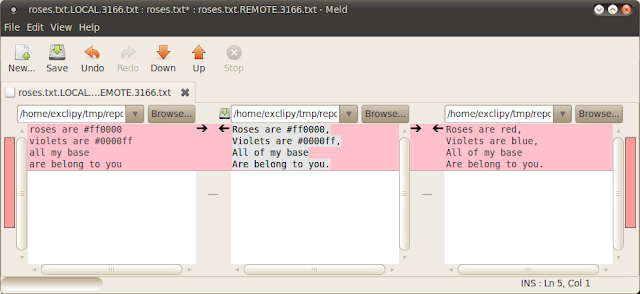

Если конфликт слияния происходит из-за того, что каждый вариант изменения - это изменение от какого-то "базового" состояния, то неплохо бы видеть не только изменения, но и базовое состояние.
На следующем рисунке A - это "базовое" состояние, B и C - это по-разному измененные состояния, а D - это состояние, которое нужно получить в результате слияния B и C.

Для того чтобы найти изменения внесённые в каждую ветку, необходимо знать как выглядит база слияния, состояние (A). Самый простой механизм получения информации о базе слияния, это установка опции merge.conflictstyle в значение diff3:
$ git config merge.conflictstyle diff3
После включения этой опции, попробуйте заново сделать слияние (git reset --hard; git merge master) и проинспектируйте конфликтующий файл ещё раз:
$ cat roses.txt
<<<<<<< HEAD
roses are #ff0000
violets are #0000ff
all my base
are belong to you
|||||||
roses are red
violets are blue
all my base
are belong to you
=======
Roses are red,
Violets are blue,
All of my base
Are belong to you.
>>>>>>> master
Теперь мы видим третий фрагмент посередине, который и является базой слияния или состояние (A). Изменения видны как на ладони: в ветке beta (HEAD) человеческие названия цветов были заменены на HTML коды, а в ветку master добавили капитализацию и пунктуацию. Основываясь на этих знаниях, мы теперь знаем что результат должен включать в себя капитализацию, пунктуацию и цветовые HTML коды.
В принципе на этом можно было бы и закончить, потому что результат достигнут. Но есть решение и получше.
Графическое Слияние (GUI Merging)
Хотя и простое текстовое представление конфликта слияния делает свою работу в простых случаях, на практике конфликты могут быть более радикальными и сложными. В таких случаях могут помочь графические инструменты. Мой выбор пал на простой инструмент написанный на Python под названием meld, но может подойти любой другой графический инструмент, способный представить слияние в трёх-колоночном виде.
Для использования графического инструмента (он должен быть установлен), после того как git пожаловался что есть конфликт, введите следующую команду:
$ git mergetool
Последует вопрос какой программой для слияния вы хотели бы воспользоваться, просто введите meld и нажмите Enter. Вот как окно программы может выглядеть (подразумевается опция merge.conflictstyle не была включена):

Несмотря на то что информация представлена бок о бок, она не отображает нужные фрагменты которые были в Listing 2. Мы не видим здесь фрагмента базы слияния (состояния (A)), что мы видим это файл roses.txt.LOCAL.2760.txt в левой колонке и файл roses.txt.REMOTE.2760.txt в правой колонке и файл посередине это неудачное слияние. Т.е. по сути нам представили состояния (B), © и несостоявшееся состояние (D), но состояние (A) отсутствует...
Правда отсутствует? Давайте проверим, в старом добром терминале:
$ ls -1
roses.txt
roses.txt.BACKUP.2760.txt
roses.txt.BASE.2760.txt
roses.txt.LOCAL.2760.txt
roses.txt.REMOTE.2760.txt
Видим интересующий нас файл: roses.txt.BASE.2760.txt. Это и есть файл базы слияния. Теперь нам осталось всего лишь найти изменения внесённые в ветки master и beta, по отношению к базе. Мы можем сделать это двумя отдельными вызовами meld:
$ meld roses.txt.LOCAL.2760.txt roses.txt.BASE.2760 &
$ meld roses.txt.BASE.2760 roses.txt.REMOTE.2760.txt &
(Кто-то может подметить что было бы более разумно, поменять порядок аргументов в первом вызове, для того чтобы файл базы находился в левой колонке в обоих случаях, но именно такой порядок сохраняет подобие трёх-колоночного вида, при котором база остаётся по середине.) Результат выполнения — два окна как показано ниже:

При чтении первого окна справа налево и второго окна слева направо, становится ясно как день, какие изменения произошли в каждой ветке. Так как meld любезно подсветил все изменения, теперь практически не возможно пропустить даже мелко заметные правки (Кто-нибудь заметил добавление предлога "of" при просмотре текстового представления разрешения конфликта Listing 1 или даже Listing 2?)
Вооружившись этими знаниями, мы теперь можем вернуться к трёх-колоночному представлению и сделать изменения. Моя стратегия ручного слияния это взять весь текст из ветки с более весомыми изменениями (в данном случае master/REMOTE т.е. beta), и поверх него производить пошаговые правки, т.е. вносить изменения сделанные в другой ветке (master). Вот что получилось:

А теперь всё вместе (All Together Now)
Надеюсь, вы найдёте этот трёх-окошечный метод разрешения конфликтов, таким же полезным каким нахожу его я. Но согласитесь что запускать новые вызовы meld вручную каждый раз при разрешении конфликтов, не очень то и удобно. Выход, это настроить git таким образом чтобы все три окна открывались автоматически при вызове команды git mergetool. Для этого можно создать выполняемый скрипт, который должен находится в переменной окружения PATH (например $HOME/bin/gitmerge), со следующим содержимым:
#!/bin/sh
meld $2 $1 &
sleep 0.5
meld $1 $3 &
sleep 0.5
meld $2 $4 $3
И добавьте следующее в ваш ~/.gitconfig файл:
[merge]
tool = mymeld
[mergetool "mymeld"]
cmd = $HOME/bin/gitmerge $BASE $LOCAL $REMOTE $MERGED
Теперь, когда вы в следующий раз будете запускать команду git mergetool для разрешения конфликта, откроются все три окна:
Окно дифа между BASE и LOCAL
Окно дифа между BASE и REMOTE
Окно трёх-колоночного вида
После того как вы привыкните к такому разрешению конфликтов с использованием трёх вышеупомянутых окон, вы скорее всего обнаружите, что процесс стал более методичным и механическим. В большинстве случаев, вам даже не придётся читать и понимать куски кода из каждой ветки, для того чтобы понять какой же вариант применить для слияния. Вам больше не понадобится догадываться, потому что вы будете гораздо более уверенным в корректности вашего комита. Из-за этой уверенности, появится чувство что разрешение конфликтов превратилось в увлекательное занятие.
Примечание из обсуждения: Я бы рекомендовал сразу взять готовую программу, которая поддерживает 3-way merge. Сам я пользовался kdif3, теперь использую Beyond Compare Pro. И тот и другой продукт умеют 3-way merge, разница в лицензиях и плюшках. Оба интегрируются как с мерком, так и с git'ом.